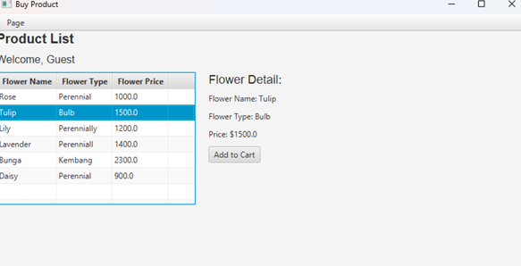
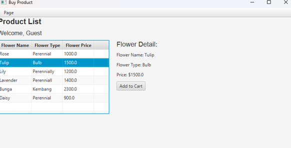

Tentang Proyek
Florarity adalah tugas proyek semester 3 saya, berupa aplikasi yang dikembangkan untuk mata kuliah Business Application Development (BAD). Aplikasi ini merupakan sistem manajemen toko bunga yang dibangun menggunakan Java dan terintegrasi dengan database MySQL.
Untuk detail lebih lanjut, silakan unduh dokumentasi proyek di bawah ini.
Sistem ini dirancang untuk melayani dua peran pengguna utama: Admin, yang memiliki wewenang penuh untuk mengelola data produk, dan Customer, yang dapat melakukan registrasi, login, dan melihat produk. Untuk detail teknis lebih lanjut, silakan unduh dokumentasi proyek di bawah ini.
Lihat Dokumentasi Lengkap (ZIP)Galeri Visual
Beberapa tangkapan layar dari antarmuka aplikasi Florarity.
 
